X1908–X2000¶
Bicentric Pairs PU(k) & Orthocorrespondents
X1908–X2000 (Bicentric Pairs PU(k) & Orthocorrespondents) — 16 representative centers (from 93 in collection) constructed on acute reference triangle \((a, b, c) = (5, 6, 7)\) with unit baseline AB = \(1\).¶
Group Preamble — Centers from Bicentric Pairs, 1908-1982
For a definition of a bicentric pair (e.g., the 1st and 2nd Brocard points) click Tables at the top of this page. Suppose P and U are a bicentric pair. Many operations on P and U result in triangle centers. Among these are trilinear and barycentric product, bicentric sum, bicentric difference, crosssum, and crossdifference. For definitions of these, click Tables. At the time this section is added to ETC (September 15, 2003), bicentric pairs
P(1),U(1); P(2),U(2); …; P(42),U(42)
are defined in Tables. In this present section, the abbreviation PU(n) means the bicentric pair P(n),U(n).
Group Preamble — Orthocorrespondents, 1992-2006
Suppose P is a point in the plane of triangle ABC. The perpendiculars through P to the lines AP, BP, CP meet the lines BC, CA, AB, respectively, in collinear points. Let L denote their line. The trilinear pole of L is the orthocorrespondent of :g:`P <P*>`. This definition is introduced in Bernard Gibert , Orthocorrespondence and Orthopivotal Cubics, Forum Geometricorum 3 (2003) pages 1-27.
\(f(a,b,c) = a^{2}qr + (-pS_{A} + qS_{B} + rS_{C})p\),
where \(S_{A}\) = (\(b^{2}\) + \(c^{2}\) - \(a^{2})\)/2, and \(S_{B}\) and \(S_{C}\) are defined cyclically.
\(g(a,b,c) = yz + (-x \cos A + y \cos B + z \cos C)x\).
The orthocorrespondent of every point on the line at infinity is the centroid. Two orthoassociate points (i.e., an inverse pair in the polar circle, such as X112 and X115) share the same orthocorrespondent.
X1908MIDPOINT OF PU(8)
X1909CROSSSUM OF PU(9)
X1910TRILINEAR POLE OF PU(23)
X1911TRILINEAR POLE OF PU(9)
X1912IDEAL POINT OF PU(9)
X1913MIDPOINT OF PU(9)
X1914CROSSDIFFERENCE OF PU(10)
X1915CROSSSUM OF PU(11)
X1916TRILINEAR POLE OF PU(11)
X1917TRILINEAR 6th POWER POINT
X1918BICENTRIC SUM OF PU(12)
X1919BICENTRIC DIFFERENCE OF PU(12)
X1920CROSSSUM OF PU(12)
X1921CROSSDIFFERENCE OF PU(12)
X1922TRILINEAR POLE OF PU(12)
X1923BICENTRIC SUM OF PU(13)
X1924BICENTRIC DIFFERENCE OF PU(13)
X1925CROSSSUM OF PU(13)
X1926CROSSDIFFERENCE OF PU(13)
X1927TRILINEAR POLE OF PU(13)
X1928ISOGONAL CONJUGATE OF X1917
X1929ISOGONAL CONJUGATE OF X1757
X1930BICENTRIC SUM OF PU(14)
X1931CROSSDIFFERENCE OF PU(32)
X1932CROSSSUM OF PU(14)
X1933CROSSDIFFERENCE OF PU(14)
X1934TRILINEAR POLE OF PU(14)
X1935CROSSSUM OF PU(15)

X1936CROSSDIFFERENCE OF PU(15)

X1937TRILINEAR POLE OF PU(15)
X1938IDEAL POINT OF PU(15)
X1939MIDPOINT OF PU(15)
X1940CROSSSUM OF PU(16)
X1941CROSSSUM OF PU(17)
X1942TRILINEAR POLE OF U(17)
X1944CROSSDIFFERENCE OF PU(18)
X1945TRILINEAR POLE OF PU(18)
X1946BICENTRIC DIFFERENCE OF PU(19)
X1947CROSSSUM OF PU(19)
X1948CROSSDIFFERENCE OF PU(19)
X1949TRILINEAR POLE OF PU(19)
X1950CROSSSUM OF PU(20)
X1951CROSSDIFFERENCE OF PU(20)
X1952TRILINEAR POLE OF PU(20)
X1953BICENTRIC SUM OF PU(21)
X1955CROSSDIFFERENCE OF PU(21)
